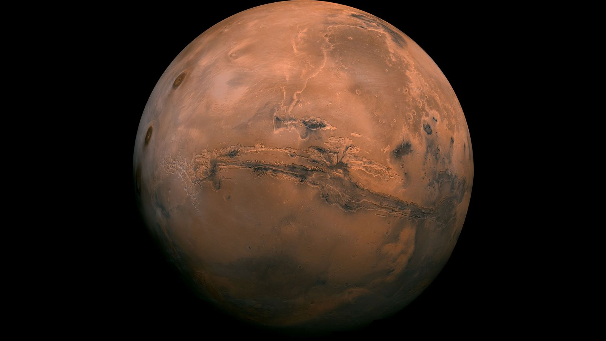

Mars, the “Red Planet,” is the fourth planet from the Sun and Earth’s closest planetary neighbor. It is a cold, desert-like world with two small moons, a thin carbon dioxide atmosphere, and surface features including the largest volcano and canyon in the solar system.
📌 Key Facts
- Fourth planet from the Sun
- Distance from Sun: 206-249 million km
- Rotation(Day): 24 hours,39 minutes
- Orbital Period(Year): 687 Earth days
- Orbital Speed: 24 km/s
🔴Unique Featuures
Mars has no global magnetic field , only localized crustal magnetism . Evidence of ancient rivers , lakes and possibly oceans. It has two small, irregularly shaped moons Phobos: Larger , orbits very close , slowly spiraling inward Deimos: Smaller , farther out , stable orbit